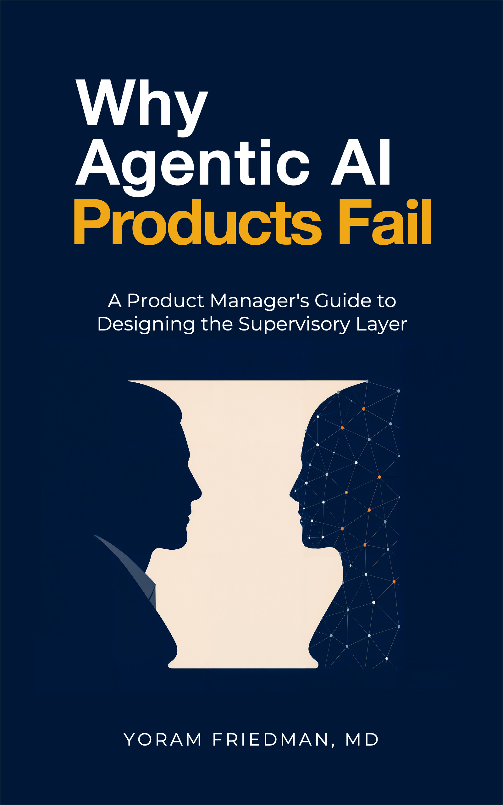
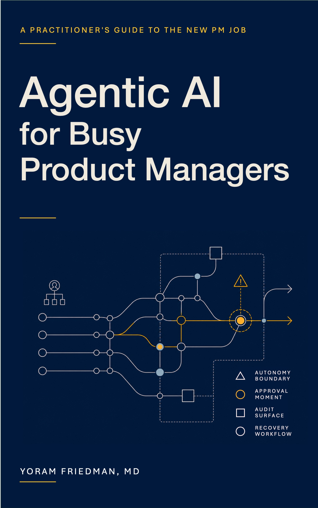
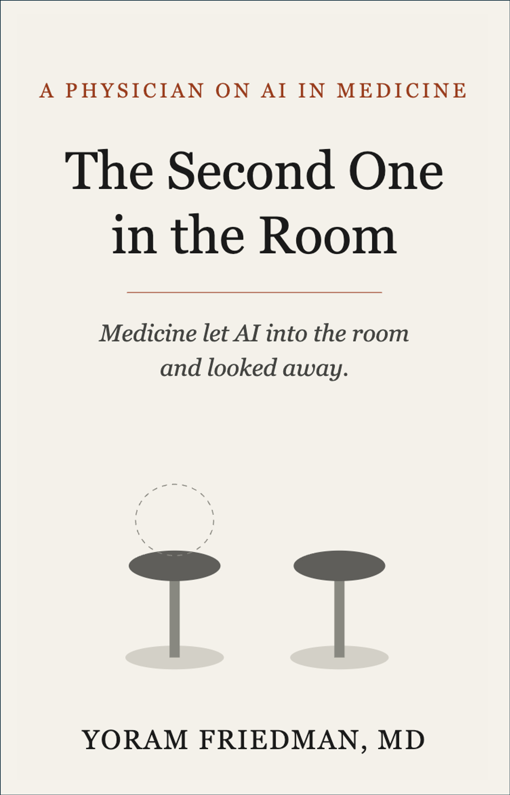

Physician · Product Leader · Author
Working on what it actually takes for AI to move from pilot to production in regulated environments.
Trained as a physician. Fifteen years in enterprise product. Currently part of SAP's Business AI platform product management team.
“The team ships the agent. The products fail because no one ships the system that supervises it.”
From Why Agentic AI Products Fail
About
There are product leaders who understand healthcare data. There are physicians who understand AI. The intersection is small, and most of the work that matters lives there.
With 15+ years building enterprise cloud and data platforms, I bring the product track record of a senior technology leader and the clinical depth of a trained physician. Among product managers, I understand what it actually means when an algorithm touches a patient. Among physicians, I have built and shipped products at Walmart scale, SAP enterprise, and regulated health tech startups. That intersection is where I do my best work.
Senior Director at Walmart Global Tech ($400M+ in operational savings; 10-person global PM team built and grown from the ground up). At Hello Heart, defined the regulated clinical health tech foundation for remote cardiac monitoring under HIPAA. Currently on SAP's Business AI platform product management team, partnering with multiple SAP business units, including Healthcare, on their data products and AI adoption.
The hardest part of technology transformation is not the architecture, it is the people. I focus on the human and cultural side of change: how teams adopt new tools, where resistance comes from, and how to design rollouts that respect workflow reality and build genuine trust. Technology that is not adopted is not a product. It is a cost.
I write and think publicly about the hard problems in healthcare AI and agentic product design. The technical foundation goes back to early work on healthcare data integration and enterprise interoperability standards (HL7, FHIR, EDIFACT, IDOC), and how data actually flows across regulated boundaries. Recent: three Harvard Medical School / Emeritus certifications, completed in deliberate sequence to deepen domain expertise at the AI / healthcare intersection. AI in Health Care: From Strategies to Implementation (Oct 2025), Leading Digital Transformation in Health Care (Dec 2025), and Health Care Transformation (Jan 2026).
Work
Three books and a continuous body of writing. Two practitioner guides for PMs building agentic AI. One on what medicine is risking by letting AI into the room without really watching. And a weekly record of thinking on healthcare AI, enterprise data, and the governance questions the market is not asking clearly enough.
Book — New
Why Agentic AI Products Fail
A PM's guide to designing the supervisory layer. Every agentic product is two products. Most teams build the agent and assume the rest. This book is about the rest.
Available on Amazon ↗
Book
Agentic AI for Busy Product Managers
Evals, runtime artifacts, supervision design, cost models, observability, and governance that holds. Free to read online.
Free at agenticaiproductmanagement.com ↗
Book
The Second One in the Room
Medicine let AI into the room and looked away. What happens when clinical decision-making shares space with a system no one fully understands.
Available on Amazon ↗
Articles
Data, Decisions, and Clinics
Ninety-plus articles on healthcare AI, enterprise data architecture, regulation, and what it actually takes for AI to move from pilot to production in a regulated environment. New writing weekly.
data-decisions-and-clinics.com ↗
The Framework
Six phases that name what a product manager actually does when shipping an agentic AI product. The structural backbone of the book, the article series, and the SAP Community AI Product Management posts. Most teams enter Phase 1 without Phase 0; that is where the failures begin.
AI Literacy
A state of the organization, not a project stage.
Key question
Does this PM understand what an agent is and is not?
Discover & Decide
Decide whether an agent is the right solution. Most failures prevented here.
Key question
Should we actually build this?
Design
Design the agent and the supervisory system. Runtime behavior engineered deliberately.
Key question
What can the agent do unilaterally?
Evaluate
Prove readiness through evidence. Replaces the pass/fail gate with distribution.
Key question
What is the P10 pass rate across K runs?
Observe
Measure what the agent actually does. Continuous front end of Operate.
Key question
Did the agent stay within its boundary?
Operate & Retire
Act on what Observe shows. Drift detection, governance, retirement criteria.
Key question
Is the agent still doing what we authorized?
Phases 4 and 5 form a continuous feedback loop. Observe is the measurement layer; Operate is the response layer.
Frameworks
35 named mental models developed across the writing, each with an insight, a key phrase, and a source. The vocabulary that makes the lifecycle above operational. Nine shown below.
01
The Iceberg
“You moved the data. The meaning stayed behind.”
02
The Coverage Gradient
“Regulatory intensity tracks clinical claims, not patient risk.”
03
Criterion 4 Failure Mode
“The framework assumes someone is watching.”
04
Trained on the Wrong End of the Story
“The model learned the end. It is deployed at the beginning.”
05
Intelligence Without Context
“Intelligence without context is just confidence.”
06
Agent-Based Experience (ABX)
“Design for one customer and forget the other. It fails.”
07
Two-Channel Agentic Design
“Most PMs design Channel 1. Channel 2 is the supervisor.”
08
The Supervision Paradox
“Oversight without understanding isn’t safety. It’s sign-off.”
09
Earned vs. Scheduled Autonomy
“Earned, not scheduled. Expand the boundary on evidence, not the calendar.”
Nine of 35 shown. The rest live in the book and articles. Browse the full library →
Speaking & Impact
Most people write about AI. These books come from someone who trained in the clinical rooms AI is now entering, and then spent fifteen years building the enterprise platforms displacing them.
Available for selected speaking engagements, podcasts, and advisory discussions on agentic AI product design, AI governance in regulated environments, and what medicine is risking by not watching closely enough.

Why Agentic AI Products Fail.
Available on Amazon.

Agentic AI for Busy Product Managers.
Paperback on Amazon. Free online at agenticaiproductmanagement.com.

The Second One in the Room.
Available on Amazon.
Get in touch
For speaking, advisory, workshops, podcast invitations, or to share a hard problem in healthcare AI or enterprise product. I respond.